FNIRT - FMRIB's Non-linear Image Registration ToolFNIRT v1.0&beta - User Guide |
|
It is frequently desirable to register different brains to each other, or to register a set of brains to a common space/template. This is for example the case when one wants to pool fMRI results across several subjects at a second level or when wanting to compare fractional anisotropy (TBSS) or tissue composition (FSL-VBM) between groups. Registration algorithms can be divided into linear and non-linear depending on the type of deformations they permit. FLIRT is an example of a software that performs linear registration, meaning that it will translate, rotate, zoom and shear one image to match it with another. Sometimes the differences between subjects are such that the linear transform is not sufficient to achieve good registration. The local deformations permitted by a non-linear method may then do a better job.
| 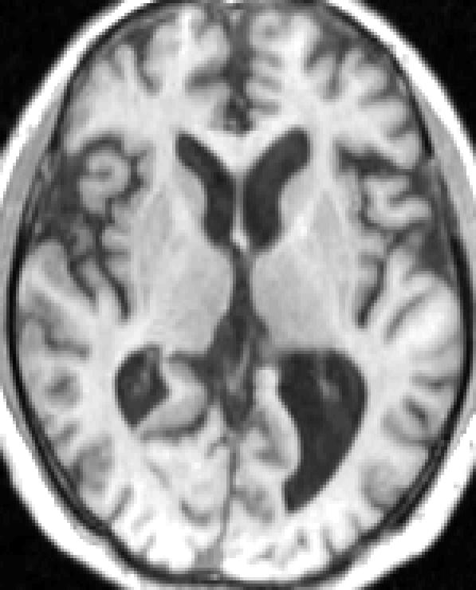 | 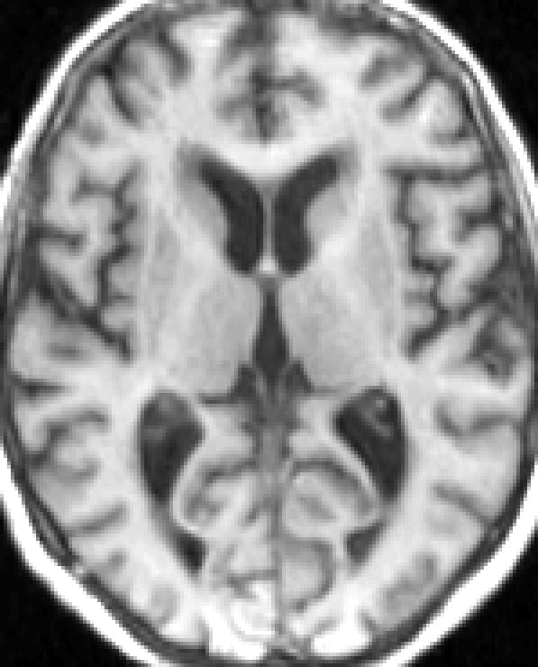 | 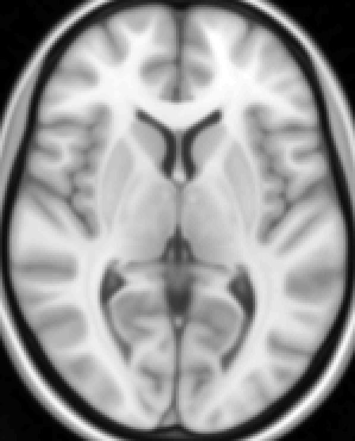 | 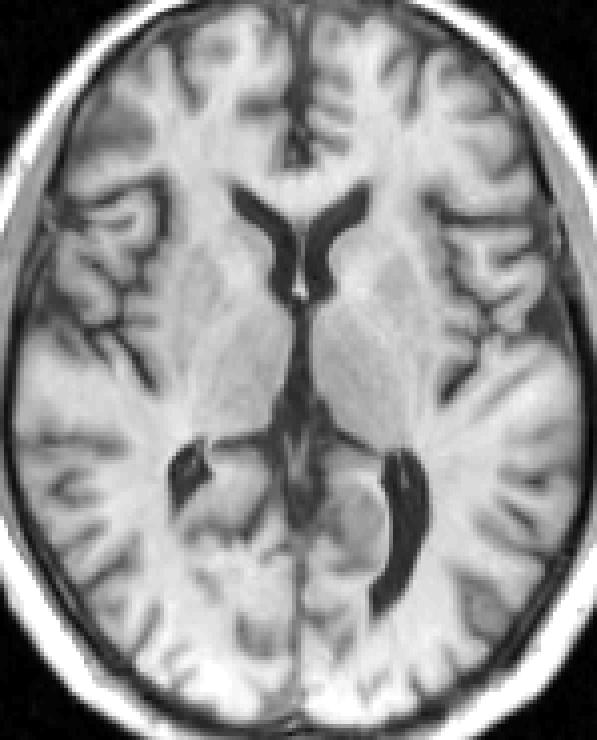 | 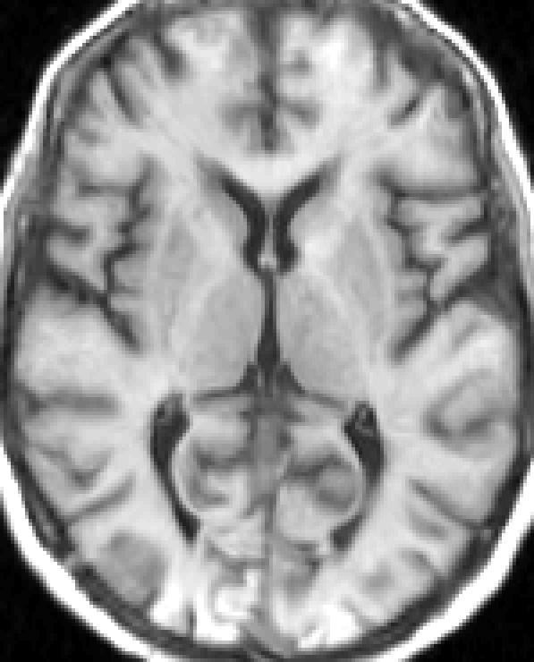 | ||
| flirted subject #1 | flirted subject #2 | MNI152 T1 | fnirted subject #1 | fnirted subject #2 |
The example above demonstrates how a linear transform is unable to account for the local changes around ventricles and sulci caused by atrophy. While the non-linear model has done a reasonable job of compensating for this.
An affine transformation is characterised by a coordinate transform defined as
where A is a 4x4 matrix that is uniquely defined by 12 values (3 translations, 3 rotations, 3 zooms and 3 shears). This is sufficient to model overall differences in position and size between different brains. However it is often not sufficient for modelling more "local" differences such as e.g. enlarged ventricles or sulci. One may then instead use a non-linear transformation given by
The crucial part here are the di(x,y,z), the warp fields. These are three (one for each dimension) fields of displacements, each of which have the same size as the image one is warping towards. They are often represented as linear combinations of basis-functions, thereby reducing the number of parameters that needs to be determined. In the case of fnirt they are represented by quadratic or cubic B-splines.
The only cost-function presently implemented in fnirt is the "sum-of-squared differences". I.e. it attempts to minimize the function
where f denotes the "reference image" (e.g. the MNI152-template) and g denotes the image we want to warp. This would potentially limit its (fnirt's) use to cases where the images f and g are very similar, as opposed to other cost-functions like e.g. correlation-ratio or mutual information which are less sensitive to differences in contrast. However, the sum-of-squared differences cost-function has important advantages when searching for the parameters that minimize its value. In addition fnirt has the option of modulating the intensity of f, both globally and locally, that addresses the issue of differences in contrast.
Registration (linear or non-linear) is really a non-linear optimisation problem in that there is some function O that depends in a non-linear fashion on some set of parameters w, and we want to find the values of w that minimizes O. Methods for finding the parameters w come in various flavors; Some will require only the ability to calculate O(w) whereas other relies also on the first, and possibly second, derivatives with respect to w. Methods in the latter category can potentially have large advantages over the former in terms of executions speed, something that is especially important when there are a large number of unknown parameters.
The Gauss-Newton method falls into the second category and is an approximation to the Newton-Raphson method that is valid when the function O is a sum-of-squares. It provides an explicit formula for where to take the next step in the parameter space w.
Where H and &nablaO denotes the Hessian and the gradient of O respectively. This is an advantage of Gauss-Newton over many other methods that will only provide a direction in which to search for a local minima, and will potentially enable faster convergence.
Fnirt has been implemented using a Levenberg-Marquardt modification of the Gauss-Newton method and great effort has gone into an efficient calculation of H.
All non-linear registration is a compromise between minimising the cost-function, i.e. between making the images look as similar as possible, and making the warps/displacements "reasonable". This is based on a notion that some warps are more reasonable, or probable, than others. We typicall find a smoother warp more likely than one that is very sharp. In addition there is the notion of one-to-one and onto. With one-to-one we mean that there can only be one point in the original space mapping into any given point in the transformed space and by onto we mean that there cannot be any points in the transformed space to which there is no mapping.
This compromise is formalised by some regularising function, typically with concepts borrowed from mechanics. Examples of regularising functions are "membrane energy" and "bending energy". These are functions of the warps themselves, the images doesn't enter into it, that have a high value for sharp warps and a small value for smooth warps.
Hence the cost-function that we really minimise is
where &epsilon is the regularisation function and &lambda is a "fudge factor" that determines the relative balance between how "similar" the images get and how "smooth" we want the warps.
Below is an example of warping a subject (with some atrophy) to the MNI152 template with "medium" regularisation (&lambda=30 with the ssqlambda option set) and with "little" regularisation (&lambda=8 with the ssqlambda option set)
| 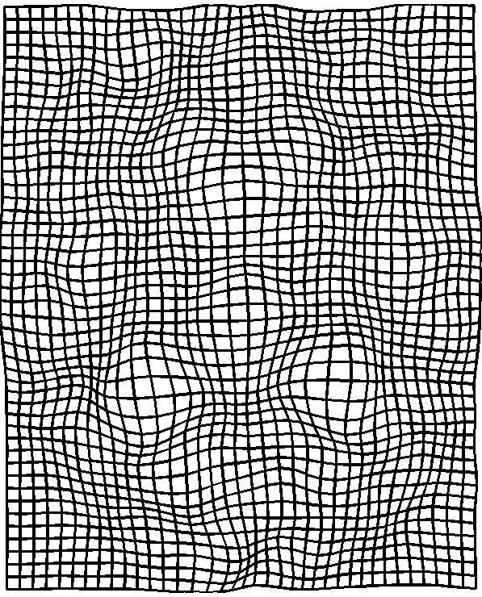 | 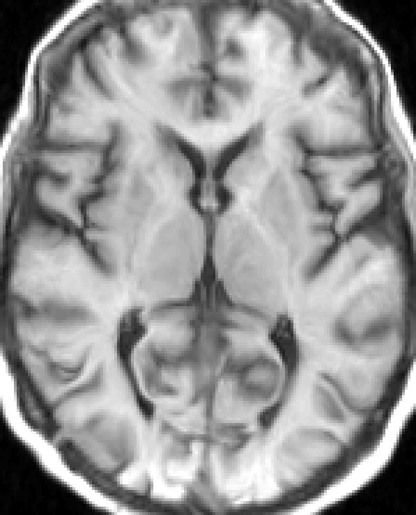 | 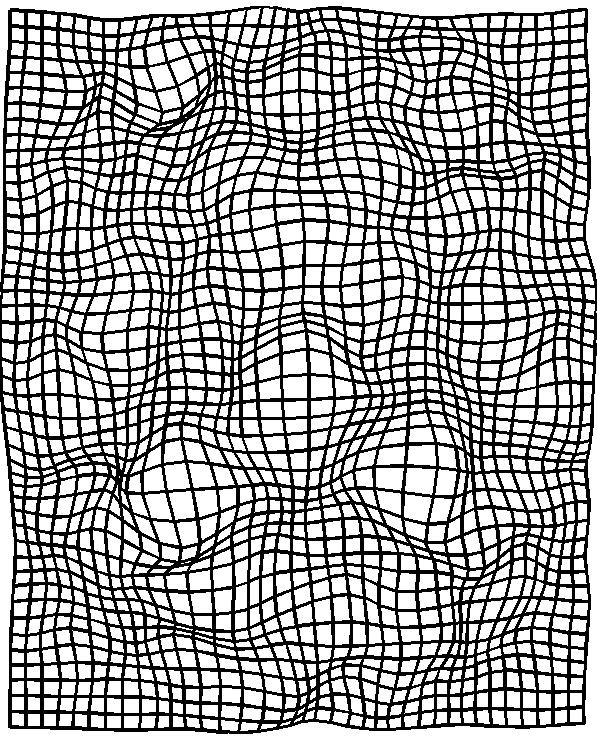 | ||||||
| Linearly registered image |
Warps with medium regularisation |
Warped image with medium regularisation |
MNI152 T1 | Warped image with little regularisation |
Warps with little regularisation |
In the images abov it can be seen that with the larger value for &lambda (warp and image on the left) the warps are smoother and the warped image is, possibly, a little less similar to the template. With the smaller value for &lambda (warp and image on the right) the image is slightly more similar to the template, in particular the ventricles and the left Sylvian fissure, but at the expense of sharper warps. For this particular data set there are more than ten voxels (in the whole volume) where the one-to-one condition has been violated when using the lower value for &lambda, so clearly the larger value is more appropriate in this case.
We refer to &lambda as a "fudge factor", and the reason for that is that we have no principled way of deriving an appropriate value for it. It will have to be determined empirically for each "category" of images. If one for example wants to register structural T1-weighted images with reasonable contrast and signal-to-noise one determines, once and for all, a suitable value for &lambda and uses that for subsequent studies. There are some examples of "appropriate" values in the "Example uses" section.
The sum-of-squared differences cost function assumes that the images f and g are identical save for some differences in shape, and can get its knickers in a twist when that is not the case. An example of this is when one of the images is affected by a bias-field while the other is not.
| 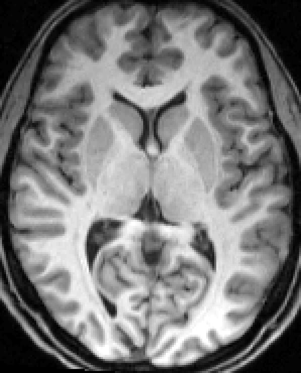 | 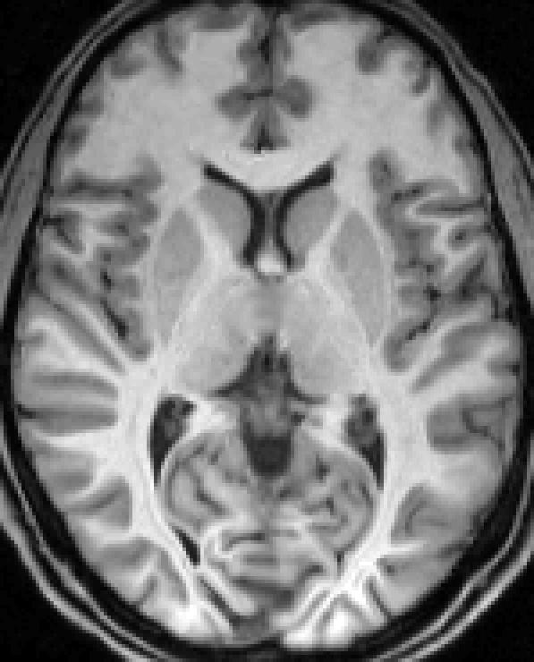 | |||
| flirted image | MNI152 T1 | fnirted image |
We can see from the images above that for this subject the linear registration (flirt) did a good job. We can also see that there is a considerable intensity gradient (bias-field) in the anterior-posterior direction of the image. When looking at the fnirted image we see how it (fnirt) has "tried to correct" for this by shrinking the white matter in the posterior part of the brain, thereby reducing the intensity. Conversly it has shrunk the gray matter in the frontal parts, increasing the intensity there.
In fnirt this can be addressed using the various intensity modulation options that are available. For the example above the "local linear" option would be suitable. It is implemented by altering the cost-function to

where b is now a bias-field that is explicitly modelled as part of the registration and where the parameters &beta are estimated along with w Applying this model to the example above we obtain
| 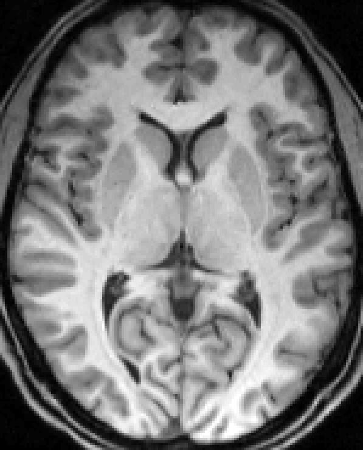 | 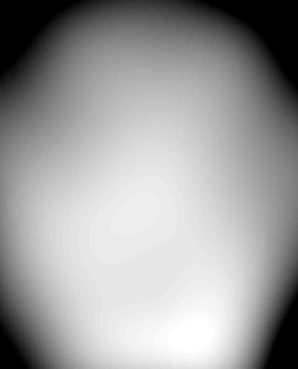 | ||||
| flirted image | MNI152 T1 | fnirted image | bias-field |
where we can now see that when explicitly modelling the bias-field the "superfluous" warps have dissapeared. We can also see that even in this case, where the linear registration has done a very good job, there are potential gains from non-linear registration.
A diffeomorphic mapping from a space U to a space V is one which has exactly one position in V for each position in U, which also means that it is invertible and that the Jacobian of the mapping is greater than zero at each location. This is clearly a desirable property, and one which people try to achieve in non-linear registration. In recent years it has become popular to use algorithms where diffeomorphism is guaranteed by construction. To understand this we need to look at how the warps are constructed from a series of iterations. In our (oldfashioned) case the displacement field is constructed as the sum of the updates calculated at each iteration.
This means that even if each and every update is diffeomorphic in itself, the sum may not neccessarily be. There are algorithms that will instead construct the displacement field from the updates as
i.e. they are warping the warps rather than adding them. In this latter case one can guarantee that d is diffeomorphic as long as each of the di are diffeomorphic. This means that one can use heavy regularisation (big &lambda) when calculating each update, thereby ensuring diffeomorphism for each step, and then perform many updates (iterations) thereby still accomodating large displacements.
fnirt is not diffeomorphic by construction, i.e. it sums the updates. Hence after each update (iteration) there is a risk that the field is no longer diffeomorphic. Therefore fnirt uses a different "trick" which means that after each sub-sampling level it checks for non-diffeomorphic fields (by searching for <=0 Jacobians) and if it finds any it will project the field onto the closest diffeomorphic field.
This is, perhaps, less elegant then ensuring diffeomorphism by construction, but also has its own advantages. A method that guarantees dieffeomorphism by construction guarantees only that. The Jacobians can in principle become infinitely close to zero which can, depending on the reason for the registration, be a problem. In contrast fnirt has the ability to project the warp onto any manifold consisting of mappings with Jacobians within a specified range. By for example setting --jacrange=0.2,5 one specifies that one wants to find the "best" warps of all those for which there are no local contractions/expansions of volume greater than 5.
Fnirt is a command line program that is run by typing fnirt followed by some set of parameters. The minimum you need to type is
fnirt --ref=target_image --in=input_image
but it is not very likely it will do you any good. Fnirt has a large set of parameters that determine what is done, and how it is done. Without a knowledge of these parameters you will not get the best results that you can. These parameters are described below, but it should be said that there are many of them, and to complicate things further they are linked such that the value of one parameter will determine what is the optimal value to use for another parameter. Hence, the command line options for fnirt offers a lot of flexibility but are difficult to use unless one is an expert on non-linear registration. We therefore offer the option of using configuration files that hides the complexity of fnirt and we strongly encourage using these rather than specifying command line options oneself.
A configuration file is a text file containing some or all of the parameters that can be specified for fnirt. The name of the file should be passed as argument to the --config parameter. It should be an ascii-file with one row for each parameter, and where comments (ignored by fnirt) are preceeded by a #. A very simple (and silly) config file named my_silly_file.cnf could look like
# I want to use membrane energy for regularisation
--regmod=membrane_energy
It becomes more useful when it specifes all or most parameters with values suited for ones particular application.
When a parameter is specified both in the config-file and on the command line the value on the command line takes precedence. For example with the example above we could run fnirt with
fnirt --in=my_brain --ref=MNI152_T1_2mm --config=my_silly_file --regmod=bending_energy
and the --regmod=bending_energy on the command line will take precedence over the specification in my_silly_file.
When you specify --config=my_file, i.e. without explicit path or extension, fnirt will search for ./my_file, ./my_file.cnf, ${FSLDIR}/etc/flirtsch/my_file and ${FSLDIR}/etc/flirtsch/my_file.cnf in that order and use the first one that is found.
As part of the fnirt distribution we supply two predefined config files: T1_2_MNI152_2mm.cnf and FA_2_FMRIB58_1mm.cnf. These contain parameters that have been found to be useful for registering a good quality T1-weighted 3D acquisition to the MNI152 template and for registering a good quality FA image to the FMRIB58 template. Together with the override facility this is probably the starting (an quite possible finishing) point for most users. Let us say for example that you want to register a T1 scan to the MNI152 template, but that you want to push warp-resolution a little beyond that given in T1_2_MNI152_2mm.cnf (10mm isotropic). You may then e.g. run fnirt with
fnirt --in=my_brain --config=T1_2_MNI152_2mm --warpres=6,6,6
As our experience with fnirt increases and we start using it for more applications we will supply more configuration files. Meanwhile if you have an application for which neither of the predefined config files is appropriate you may want to read about the individual parameters below and write your own file. We would then recommend to start with one of the predefined files (that which seems more appropriate given your application) and gradually change it to suit your application. Alternatively if your application is of sufficient general interest you may contact us and we can together devise a file for that application.
This paragraph contains some general advice that is useful to ensure that fnirt is run in an "optimal" manner. fnirt is designed to be a "medium resolution" non-linear registration method. Hence it is intended to be used with a warp-resolution of ~10mm. If/when attempting to go much below that (i.e. below ~5mm) one starts to pay a high price both in terms of working memory and execution time. In general this is not a big problem since a 10mm warp-resolution is typically sufficient to register two brains.
Another factor that greatly affects execution time and memory requirements is the resolution and the field-of-view (FOV) of the --ref image respectively. Let us say one wants for example to register one T1-scan to another. Tpical scan parameters may then be e.g. a 208x256x192 matrix-size with a 1x1x1mm resolution. With that FOV (208x256x192mm) there are typically thick slabs of non-brain in all directions and it may be cropped extensively (using the fslroi command) without loss of any brain. If one is e.g. able to crop it down to a 146x194x130 matrix (numbers taken from a specific example) one will have reduced both execution time and memory requirements by 60%.
If one additionaly specifies a subsampling of 2 at the lowest level (e.g. --subsamp=8,4,2,2) there is a further reduction of execution time by a factor of eight. This implies that the full resolution of the images is never used for estimation of the warps, but that makes very little difference when using a warp-resolution of 10mm. When/if using subsampling of 2 the subsampled voxels have a size of 2x2x2mm which means that each spline-function has a support of 5832 voxels which is typically more than sufficient. If one uses the full resolution the support is a staggering 54872 voxels which is unneccessarily large and "wastes" execution time.
It should also be realized that the level of subsampling that is used when estimating the warps does not affect the resolution of the final warp-field. It will still produce a field with the full resolution of the --ref volume and the registered volume will have the full resolution of the --ref volume. An example of a config file that uses this "trick" is FA_2_FMRIB58_1mm.cnf, which is used to register an FA-volume to the FMRIB 1mm (overkill) FA template.
Other parameters that has an effect on efficiency include --splineorder and --numprec.
It is important to understand the concept of different sub-sampling levels and how that affects how one can/need to specify the different paramaters of fnirt. As described above in the theory section an execution of fnirt is really several consecutive registrations with increasing use of high frequency information. An example of a subsampling scheme might be --subsamp=4,2,1,1 which specifies that four consecutive registrations should be performed, the first with the --ref volume sub-sampled by a factor 4, the second by a factor 2 and the two final registrations at full resolution. Given this there are some parameters that it makes sense to define "once and for all" and use for all four registration. An example of such a parameter is --regmod which specifies what regularisation model to use ("membrane energy" or "bending energy").
For other parameters it makes more sense to specify a separate value for each sub-sampling level. An example of such a parameter is --lambda which could for subsampling scheme above be set to e.g. --lambda=200,75,40,20. What this means is that we are using a larger relative weighting of the regularisation term, i.e. we are forcing the warps to be smoother, for the registrations performed at lower resolution (larger sub-sampling). Note also how, in this example, at the final resolution we perform two registrations with decreasing regularisation.
Hence the parameters for fnirt are divided into those that are defined "once and for all" and those that can/should be defined once for each sub-sampling level. That means that there must be a complete correspondence between the parameters in the latter category. It is for example correct to specify
fnirt ... --subsamp=4,2,1,1 --lambda=200,75,40,20 ...but not correct to specify
fnirt ... --subsamp=4,2,1 --lambda=200,75,40,20 ...The exception to this is that it is correct to specify a single value for parameters that can/should be defined once for each level of sub-sampling. An example of that would be
fnirt ... --refmask=my_mask --subsamp=4,2,1,1 --applyrefmask=1 ...which is equivalent to
fnirt ... --refmask=my_mask --subsamp=4,2,1,1 --applyrefmask=1,1,1,1 ...and implies that masking should be performed at each of the four registrations.
The value for this parameter is typically the name of a text-file obtained from flirt. A typical example would be
flirt -ref MNI152_T1_2mm.nii -in my_brain.nii -omat my_affine_guess.mat
fnirt --ref=MNI152_T1_2mm.nii --in=my_brain.nii --aff=my_affine_guess.mat ...
Fnirt can be quite sensitive to the starting estimate (
bet my_image.nii my_betted_image.nii
flirt -ref MNI152_T1_2mm_brain.nii -in my_betted_image.nii -omat my_affine_guess.mat
fnirt --ref=MNI152_T1_2mm.nii --in=my_image.nii --aff=my_affine_guess.mat ...
In the same way as -aff provides a "starting guess" for the affine part of the registration the --inwarp parmeter provides a "starting guess" for the non-linear part. The value for --inwarp can e.g. be a coefficient-file from a previous run of fnirt, or it can be a "field-file" generated by some other application. It can be useful e.g. when constructing a population specific template, where at each iteration one can expect that the field should be quite similar to in the previous iteration. By setting --inwarp parameter to the field from the previous iteration fnirt only has to estimate the incremental difference.
Back to list of parametersWhen providing an initial guess for the non-linear warps (using the --inwarp parameter) it is a good idea to provide also an initial guess for the intensity mapping. The value of the parameter would then be the name/names of intensity mapping files produced by a previous run of fnirt. Depending on which model was used for intensity mapping in the previous run the information may be stored in an ASCII text-file and/or an image file with a bias-field. If specifying only the "basename", fnirt will find the relevant files itself. If fnirt was e.g. run with
fnirt --ref=... ... --intmod=global_non_linear_with_bias ... --intout=my_intensity_mapping in the previous run it will have produced two files: my_intensity_mapping.txt containing the global mapping and my_intensity_mapping.nii containing the bias-field. If then in the next run fnirt is passed the parameters fnirt --ref=... ... --intin=my_intensity_mappingboth my_intensity_mapping.txt and my_intensity_mapping.nii will be read and used.
Back to list of parametersUnlike e.g. flirt, fnirt is happiest to work on un-betted data. The reason for this is that even small local failures of bet will create edges that fnirt will try to align. On the other hand we would like to focus our effort on the brain and are quite happy to ignore scalp and other extra cranial tissue. Including extra cranial tissue in the estimation may cause problems for 2 reasons. With a limited resolution of the warps we want to focus on aligning brain structures. Aligning for example the scalp may have a detrimental effect on the alignment of the cortex nearby. Secondly, the intensity in scalp and other extra cranial tissue tend to vary wildly between sequences, much more so than brain tissue. Therefore it may cause problems for the intensity mapping.
The solution is to use a (binary) mask in the space of the --ref image. The cost-function, its gradient and Hessian is then calculated only for the voxels that fall within the mask. When registering to the MNI152 template it is often a good idea to use the mask supplied with that, e.g. as
fnirt --ref=MNI152_T1_2mm.nii --in=my_brain.nii --refmask=MNI152_T1_2mm_brain_mask_dil.nii ...
Fnirt is rather primitive in its view of the brain. It considers it as a set of intensity values and has no model for different structures, tissue types etc. It would just as happily register a photo of your face to one of your house as two brains together. It is therefore unable to handle cases where a structure (e.g. a tumor or a stroke) is present in one of the images and not the other. However, it may still be of interest to register such a brain into a standard space in order to study effects on structures at some distance from the pathology. Note that this case is distinct from pathologies where existing structures changes its size and/or shape, a case that fnirt can often handle quite well (see above).
It can therefore be useful to supply a mask in the space of the --in image. The mask must be binary and is inclusive (i.e. any voxel with a zero value gets excluded). The --inmask is warped along with the --in image in accordance with the current field. This means that the mask can/will cchange its size and shape as the --in image is being warped. Voxels falling outside the mask will be excluded when estimating the warps.
An example may make it concrete. Let us say we have a tumor that has an intensity that deviates from the surrounding tissue, and let us say we did not mask it out. Fnirt would then shrink the tumor (and therefore the area with deviation intensities) as much as it can, meanwhile expanding surrounding tissues to "fill the --ref brain out". If on the other hand we mask it out the intensity values within the tumor will be ignored and the tumor will be warped in accordance with the surrounding (non-masked) structures.
So, let us say you have a an image called some_brain_with_tumor.nii that you want to register to the MNI152 template. You may then, e.g. in flsview, draw a ROI covering the tumour and save it as tumor_mask.nii. You would then run fslmaths as
fslmaths tumor_mask -sub 1 -mul -1 tumor_maskwhich changes the mask so that the tumor is now a "hole of zeros" in a binary image with ones. Finally you would run fnirt, excluding the tumor from the calculations, using the command
fnirt --ref=MNI152_T1_2mm.nii --in=some_brain_with_tumor.nii --inmask=tumor_mask.nii ...This parameter specifies the name of the main output, a 4D nifti-file containing the spline coefficients and a copy of the affine transform passed as an argument to the --aff parameter. Hence it has the full information about the transform and can be passed to e.g. applywarp to warp an image or to invwarp to create the inverse of the warp. Most of the FSL software has been written such that one can pass either a coefficient-file or file containing the actual warp fields and they will be properly recognised and interpreted. This file is always created even if --cout has not been specified. It will then be named after the --in volume postfixed by "_warpcoef".
Back to list of parametersThis parameter specifies the name of a 3D nifti file containing the --in image warped to the space of the --ref image. If not specified this file will not be generated. It can always be created "later" using applywarp and the output specified by --cout.
Back to list of parametersThis parameter specifies the name of a 4D nifti file containing the actual warp-fields in the x-, y- and z-directions. If not specified this file will not be generated. It can always be created "later" using fnirtfileutils and the output specified by --cout.
Back to list of parametersThis parameter specifies the name of a 3D nifti file where each voxel contains the Jacobian determinant for that location. The Jacobian determinant is a relative measure that relates the volume in the original image to the volume in the warped image. If one e.g. observes a value 0.5 the interpretation is that that structure has been compressed by a factor of 2 from its original size in the --in image when warped into the space of the --ref image. This is useful when doing VBM where applying the Jacobian map to compensate for expansion/stretching is known as "Jacobian modulation". If not specified this file will not be generated. It can always be created "later" using fnirtfileutils and the output specified by --cout.
Back to list of parametersSpecifies the name of a copy of the --ref image with intensity modulation applied. This is used mainly as a diagnostic tool for figuring out why/where a given registration went wrong. Not that it ever would.
Back to list of parametersSpecifies the base-name for file/files containing information about the intensity transform. Depending on what --intmod has been set to This can be a text-file containing scaling/polynomial factors, a 3D nifti-file containing a multiplicative bias-field or a 4D nifti-file containing voxel-wise polynomial factors. This is useful mainly for "template building" where one would expect the intensity transform to be very similar from one iteration to the next. One can then generate these files using the --intout parameter and then read them in as starting estimates for the next iteration using the --intin parameter.
Back to list of parametersSpecifies the resolution (in mm) of the warps. In order to e.g. specify an isotropic resolution of 10mm one uses --warpres=10,10,10. A warp resolution of e.g. 10mm does not imply that 10mm is the highest accuracy that can be obtained for registration of any given structure. It is rather related to how fast the displacements can change as on goes from one point to the next in the displacement field. An example of a situation where high resolution is useful is when registering an atrophied brain (with enlarged ventricles and an atrophied Putamen) to a "normal" template. One will then need to shrink (compress) the ventricle, and then right next to it one has to expand the Putamen.
To increase the resolution comes at no cost in terms of the risk for local minima/silly warps as long as a reasonable shedule of sub-sampling and values for &lambda is specified. It does however mean that fnirt needs more memory to run and for standard desk/laptops the practical limit will be ~6-8mm. The warps are implemented as cubic B-splines with a knot-spacing that has to be an integer multiple of the voxel-size of the --ref image. If a value is specified for --warpres that is not and integer multiple the value will be adjusted down. So if the voxel-size of the --ref image is 3x3x4mm and --warpes is specified as --warpres=10,10,10 the actual resolution (knot-spacing) of the warps will be 9x9x8mm.
Back to list of parametersSpecifies the order of the B-spline functions modelling the warp-fields. A spline-function is a piecewise continuous polynomial-function and the order of the spline determines the order of the polynomial and the support of the spline. In fnirt one can use splines of order 2 (quadratic) or 3 (the "well known" cubic B-spline). A spline of lower order (2 in this case) has a smaller support, i.e. it "covers" fewer voxels, for a given knot-spacing/warp-resolution. This means that the calculation of the hessian matrix H in the minimisation will be faster, and also that H will be sparser and thus use require less memory. That means that going to --splineorder=2 (compared to the default 3) will allow you to push the resolution of the warps a little further and/or save execution time and memory.
The downside with a 2nd order spline is that the resulting field will not have continuous 2nd derivatives which creates some difficulties when using bending energy for regularisation. However, the approximations we are using seem to work so it is not obvious if there really is an issue. We are using --splineorder=3 as default in fnirt because we have more experience with using that. It is not inconcievable that that will change as we gain more experience.
Back to list of parametersIts value can be either float or double (default) and it specifies the precision that the hessian H is calculated and stored in. Changing this to float will decrease the amount of RAM needed to store H and will hence allow one to go to slightly higher warp-resolution. The default is double since that is what we have used for most of the testing and validation.
Back to list of parametersWhen set to 1 the --imprefm and --impinm flags imply that a certain value implies that that voxel is outside the valid FOV and should be excluded when estimating the warps. This is useful for example if one has data that has already been resampled by an affine transform or if one uses skull stripped data. In both those cases there will be zeros in the image volume that does not mean that the intensity is actually zero, but rather that it is unknown. Note though that the recommended use of fnirt is to not use skull-stripped data and to inform fnirt of any affine warps through the --aff parameter instead of resampling the data. The full form of this parameter is
fnirt --ref=MNI152_T1_2mm.nii --in=my_brain.nii --imprefm=1 ...
which specifies that a certain value implies that we are outside the valid FOV. Typically that value will be zero, in which case one does not need to bother with --imprefval. Occasionally a software wil use some other value to indicate NaN (I have seen e.g. 1024) and then you can use --imprefval to specify that
fnirt --ref=MNI152_T1_2mm.nii --in=my_brain.nii --imprefm=1 --imprefval=1024 ...
Both --imprefm and --impinm are set to 1 as default. So if you know that all the zeros in your images are actuall zero and carry information you need to specify imprefm=0 and/or impinm=0.
The use of several sub-sampling steps (with different values of &lambda) helps prevent the registration from venturing into local minima. However, within a given sub-sampling step that regularisation is constant, and that could in turn cause the algorithm to take a "poor" initial step for that resolution level. By weighting &lambda by the current value for the sum-of-squared differences (between the --ref image and the warped --in image) the effective weight of the regularisation becomes higher for the initial iterations (when we are far from the solution and the sum-of-squares is large). That means that the initial step/steps are a little smoother than they would otherwise be, and hopefully that reduces the risk of finding a local minima.
--ssqlambda is set to 1 as default, and it is typically a good idea to keep it like that. N.B. that the setting of --ssqlambda influences the recommended value/values for --lambda. The (average over all voxels) of the sum-of-squared differences is typically in the range 100-1000, and if --ssqlambda is set to 0 the value/values for --lambda should be adjusted up accordingly.
Back to list of parametersThe value of --lambda determines the relative weight between the sum-of-squared differences and some function &epsilon of the warps. However, it is not clear what the exact form of that function (&epsilon(w)) should be. We clearly desire "smoothness" in the warps so that points that are close together in the original space ends up (reasonably) close together in the warped space, but there are many potential options for how a particular local warp should be penalised by &epsilon(w). In fnirt we have implemented two different choices for &epsilon(w): Membrane Energy (--regmod=membrane_energy) or Bending Energy (--regmod=bending_energy).
The default is to use Bending Energy, and our testing indicate that that is slightly advantageous compared to Membrane Energy.
Back to list of parametersWhen this parameter is set the (spatial) derivatives of the --in in image is approximated by those of the --ref image. Since the --ref images remains stationary that means that one does not need to recalculate the gradient and Hessian for each iteration, thereby saving execution time. However, this is only true for the simplest intensity models (none and global_linear) and is therefore of limited value for most cases.
Back to list of parametersintmod is short for "intensity model" and is the parameter that allows fnirt to successfully use a sum-of-squared-differences cost-function even when the assumptions are not completely fulfilled for that. A "theoretical" explanation can be found here. The purpose is to model intensity differences between --ref and --in to avoid these from affecting the estimation of the warps. Modelling the intensity involves estimation of another set of parameters (in addition to those modelling the warps) and will hence increase both execution time and memory requirements. There are six different intensity models. These differ in the kind of differences they can model and also in the number of additional parameters that fnirt has to estimate. The models are
See also --estint for an explanation of how it can be useful to allow the intensity modelling to interact with the different subsampling steps.
Back to list of parametersDetermines the order of a polynomial that models a curvilinear relationship between the intensities in the two image. It is relevant for the global_non_linear, the global_non_linear_with_bias and the local_non_linear models. An order of five (default) should be sufficient for most applications.
Back to list of parametersDetermines the knot-spacing for the splines that are used to model a bias-field. It means the same thing as --warpres, but for the bias-field rather than the warp-fields. It is relevant for the local_linear, the global_non_linear_with_bias and the local_non_linear models. Typically a bias-field varies quite slowly over space so a deafult of --biasres=50,50,50 has been choosen.
Back to list of parametersDetermines the relative weight of the sum-of-squared differences and the bending energy of the bias-field. This is similar to the --lambda paramter, but for the bias-field rather than the warp-fields. Default is 10000.
Back to list of parametersSpecifies the allowable range of Jacobian determinants for the warps (see this for an explanation). The default is --jacrange=0.01,100, which is (more or less) equivalent to ensuring diffeomorphism. By setting it to --jacrange=-1 one allows it to take any values (and to become non-diffeomorphic). For VBM purposes (where the Jacobians are used to modulate the tissue probabilities) it can be advantageous to set a more narrow range (e.g. --jacrange=0.2,5) otherwise the presence of very small/large values may lead to highly non-normal (heavy tailed) distributions.
Back to list of parametersAs described above a multi-resolution approach consisting of sub-sampling, estimating the warps at currents scale, sample up, estimating the warps at the next scale etc is a way of avoiding local minima. The scheme for this multi resolution approach is given by the --subsamp parameter. So for example
fnirt --ref=MNI152_T1_2mm.nii --in=my_brain.nii --subsamp=4,2,1means that data will be subsampled by a factor of 4 and the transform will be calculated at that level. It will the be subsampled by a factor of 2 (i.e. an upsampling compared to the previous step) and the warps will be estimated at that scale, with the warps from the first scale as a starting estimate. And finally this will be repeated at the full resolution (i.e. subsampling 1).
The value of the --subsampl parameter will determine the "number of registrations" that are performed as steps in the "total" registration. There are a number of other parameters that can the be set on a "sub-registration" or on a "total registration" basis. So for example
fnirt --ref=MNI152_T1_2mm.nii --in=my_brain.nii --subsamp=4,2,1 --reffwhm=8,4,0Means that you order three "sub-registrations" with sub-samplings 4, 2 and 1 respectively and that for the first registration you want the MNI152 template smoothed with an 8mm FWHM Gaussian filter, for the second with a 4mm filter and for the final step no smoothing at all. On the other hand
fnirt --ref=MNI152_T1_2mm.nii --in=my_brain.nii --subsamp=4,2,1 --reffwhm=8means that you want the MNI152 smoothed by 8mm for all registration steps. These other parameters must either be specified once, and will then be applied to all sub-registrations, or as many times as there are sub-registraions. The parameters for which this is true are
The sub-sampling steps have to be monotonously decreasing, but do not have to be unique. One may for example want to run all steps at the full resolution, but with decreasing amount of regularistaion, as an optional strategy for avoiding local minima. That can be done e.g. with a command like
fnirt --ref=MNI152_T1_2mm.nii --in=my_brain.nii --subsamp=1,1,1 --lambda=100,50,25Specifies the number of iterations that should be performed for each sub-registration. At present there is no proper convergence criterion implement in fnirt. Instead a fixed number of iterations is used for each step. Each iteration of a Gauss-Newton/Levenberg-Marquardt framework uses a lot of information compared to other optimisation methods such as e.g. steepest descent. That means that converengence is typically very rapid, especially at the cruder sub-sampling steps. Also, it is not critical to run to full convergence at the higher levels since these just serve as starting estimates for the lower levels. Our experience is that after a scheme like
fnirt --ref=MNI152_T1_2mm.nii --in=my_brain.nii --subsamp=4,2,1 --miter=5,5,10very little happens to the cost-function. Until a proper test for convergence has been implemented/tested this is something that will have to be determined heuristically.
Back to list of parametersSpecifies the amount of smoothing that should be applied to the --ref and the --in images respectively. It is typically a good idea to match this to the amount of sub-sampling you are using. An example would be the command
fnirt --ref=MNI152_T1_2mm.nii --in=my_brain.nii --subsamp=4,2,1 --reffwhm=8,4,0which smoothes the --ref image with an 8mm FWHM Gaussian filter prior to subsampling with a factor of 4 for the first level of sub-registration. For the second level it smoothes it by 4mm prior to subsampling by a factor of 2. For the final level it applies no smoothing at all.
Since the MNI152 template is "a little smooth already" owing to its origin as an average of many subjects it is typically a good idea to smooth the --in image a little more that the --ref image. An example would be
fnirt --ref=MNI152_T1_2mm.nii --in=my_brain.nii --subsamp=4,2,1 --reffwhm=8,4,0 --infwhm=10,6,2If you do not specify a value for the --reffwhm parameter it will be set to the same value as --infwhm. If you do not specify a value for --infwhm it will be set to 12,8.
Back to list of parameters&lambda specifies the relative weighting of the sum-of-squared differences and the regularisation (smoothness) of the warps. A larger value of &lambda implies a smoother warp-field, at the expense of how similar to the --ref image that the --in image will end up being. There is no principled way to determine the "correct" value and suitable values for &lambda will have to be determined for each "type of data". It will e.g. be the case that a different set of parameters will be used when warping good quality T1-weighted structural images to the MNI152 template compared to when matching (relatively noisy) FA images to the FMRIB58 template. It may also be that if your T1-weighted scans have relatively poor SNR, poor contrast and/or highly non-isotropic voxels you may have to use a different set of &lambda values when matching to the MNI152 template compared to if you have optimal quality data.
You can either specify a single &lambda for all levels of subsampling (--subsamp) or one for each level like
fnirt --ref=MNI152_T1_2mm.nii --in=my_brain.nii --subsamp=4,2,1 --lambda=300,75,30 ...This is usually a good idea and has the advantage of providing over-fitting at the early stage of the registration where the gross features are aligned, while allowing a closer registration at the later stages. This same strategy can be employed even if not utilising the multi-resolution approach by specifying
fnirt --ref=MNI152_T1_2mm.nii --in=my_brain.nii --subsamp=1,1,1 --lambda=300,75,30 ...which also prevents over-fitting at the earlier stages. The difference is mainly one of computational efficiency.
The specification of &lambda is (sadly) complicated a little by its interaction with the parameters --ssqlambda and --regmod. Therefore a set of values for &lambda is only "valid" for a specific combination of values for those two parameters. Unless you are a power user who wants to find a set of parameters for a special type of data it is probably easiest to use a pre-determined set from the examples or using a predefined config file.
Back to list of parametersThis parameter determines if the parameters of the chosen intesity-model should be estimated or not. This may be useful, and may save time, in conjunction with subsampling schemes. For example in the T1_2_MNI152_2mm.cnf configuration file it is used like
fnirt ... --subsamp=4,4,2,2,1,1 --lambda=300,150,100,50,40,30 --miter=5,5,5,5,5,10 --estint=1,1,1,1,1,0Here it is assumed that when we get to the final 10 iterations (at the full resolution) the parameters of the intensity model have already been determined with sufficient precision. By therefore leaving them out of those iterations (instead using the parameters that have already been determined) one saves almost 50% of the execution time.
Back to list of parametersThis parameter indicates if the masks specfied with the --refmask and --inmask parameters should be used or not. You might think "dooh, why else would I have specified them?". The reason is that it is sometimes an advantage to not use the mask for the early iterations. An example could be e.g.
fnirt ... --ref=MNI152_T1_2mm.nii.gz --refmask=MNI152_T1_2mm_brain_mask_dil.nii.gz --subsamp=4,4,2,2,1,1 --applyrefmask=0,0,0,0,1,1 ...
where we are not using the brain-mask for the initial (lower resolution) registration steps. This is because the extracranial tissues may give information the improves the robustness of the initial steps. Once one goes to the full resolution one is hopefully quite close to the "true" solution, and then one wants to use the mask to ensure that the registration of the cortical surface is not affected by the scalp. This "trick" can be used when observing that a registration has gone wrong (doesn't look quite right). Sometimes it will work.
Back to list of parameters
So you have fnirted your images. So you have admired how well they match the template. Now what will you do?
You can try using applywarp to apply the warps (aptly named, huh?) to some other images. Let us e.g. say that you have some functional data func.nii and some structrural data struct.nii for the same subject. What you ultimately want is to have your structural data in the MNI152 space, but you realise that there is probably too little structure in the functional scan to drive a non-linear registration. You can then use the following strategy. Start by registering your functional data to the structural scan doing e.g.
flirt -ref struct.nii -in func.nii -omat func2struct.mat -dof 6 Where the text-file func2struct.mat now contains the rigid body transform that maps func.nii onto struct.nii. The next step is to get an intial affine transform mapping struct.nii onto the MNI152 template. bet struct.nii betted_struct.niiThen we use that as initial guess for fnirt
fnirt --ref=MNI152_T1_2mm.nii --in=struct.nii --aff=aff_struct2mni.mat ... --cout=warp_struct2mni.niiAnd then we use that to resample the functional scan into the MNI152 space.
applywarp --ref=MNI152_T1_2mm.nii --in=func.nii --out=funcInMNI.nii --coef=warp_struct2mni.nii --premat=func2struct.matWe are now feeding applywarp information both about the struct->MNI152 mapping and about the func->struct mapping allowing it to map from func to MNI152 in a single step. More information on how to use applywarp can be found here
For the following set of "standard tasks" the commands below are likely to work for you, provided that your data are of reasonable quality.